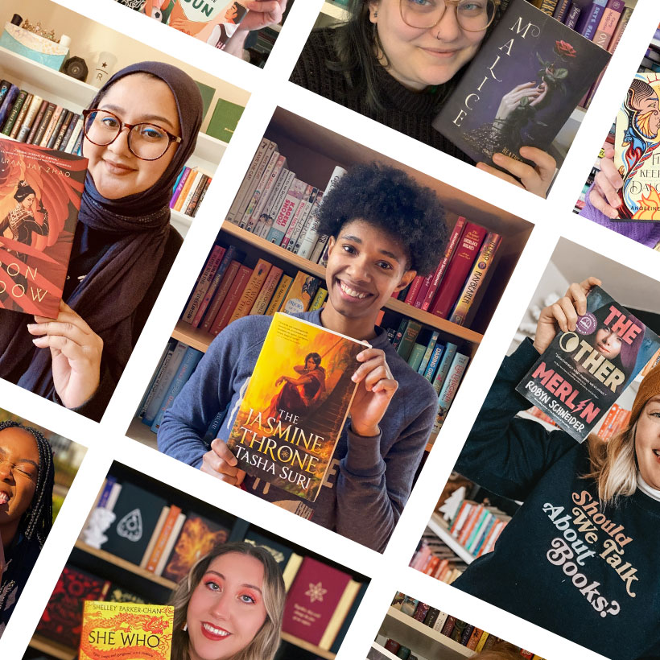

The BookTok Effect
This kind of influence has been shown to have tangible outcomes. In addition to receiving over 108 billion views on TikTok, the BookTok hashtag has significantly increased book sales. 825 million books were sold in the United States in 2021, up 9% from the year before, according to data from NPD BookScan. According to the firm, this was the highest figure since 2004. The New York Times reports that BookScan data show that BookTok helped writers sell 20 million printed books in 2021 and 2022, with sales increasing by an additional 50%. It's not only for readers, though. BookTok has evolved into a platform for authors to interact with their readers. Since BookTok trends have a direct impact on revenue, publishers are now closely monitoring them.
The distinction between the writer and the reader has evolved. What used to need a late-night interview or a book tour now takes place on a phone screen. A new type of literary connection—immediate, raw, and intensely personal—has emerged thanks to TikTok. Authors create communities in addition to marketing their novels. Additionally, readers do more than simply read stories; they also review, discuss, and distribute them to other readers. BookTok provides authors with direct access to enthusiastic readers, something that traditional marketing methods cannot. Because the platform's algorithm prioritizes interesting material over the number of followers, even novice writers can become viral with the correct strategy. Due to their virality on the social media app, books that would not have attracted significant audiences before now have millions of readers. Because books are intrinsically personal, the culture of the BookTok community is a particularly distinctive microcosm of TikTok.
By starting a movement among social media users, the BookTok subculture is changing the publishing sector. These days, fans who create and share information for others to interact with determine whether books become popular, not publishers or marketers.
| Impact on Publishing and Trends: | |||
|---|---|---|---|
| Romantasy Dominance | Backlist Revival: | Reading Habits: | Sales Plateau: |
| Romance and Fantasy ("Romantasy") remain top genres, particularly in the UK and US. | BookTok has a 395% increase in sales of books published 6 to 10 years prior. | 38% of young people in the UK rely on BookTok for recommendations, ranking ahead of family and friends. | While driving massive growth initially, high-growth sales slowed slightly in 2023–2024, stabilizing after the post-COVID boom. |

In a poll of more than 2,000 16- to 25-year-olds, almost 59% said that BookTok had helped them discover a passion for reading.
“It’s great to see that the BookTok phenomenon is igniting a love of reading for young people. Reading can be so beneficial to health and happiness and is a way for all ages to connect over common interests.” Dan Conway, Chief Executive of The Publishers Association.
BookTok is significant because it completely changed the conventional book world by placing regular readers at the center of what gains popularity. Additionally, it is reinventing reading as a social identity. Reading becomes a visible aspect of self-expression as people construct their online personas around their favorite clichés, particularly for younger audiences.